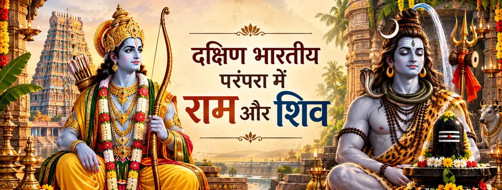

तमिल महाकाव्य की अभिव्यक्ति
कंबन ने रामायण को तमिल साहित्य का एक प्रमुख महाकाव्यात्मक रूप दिया और रामकथा को क्षेत्र की काव्यात्मक तथा भक्तिपरक चेतना का हिस्सा बनाया।

जीवंत भक्ति परंपरा
दक्षिण भारत में राम–शिव भक्ति महाकाव्य साहित्य, तीर्थयात्रा, मंदिर-उपासना, पवित्र भूगोल और जीवंत क्षेत्रीय परंपराओं के अनेक रूपों में दिखाई देती है।
दक्षिण भारतीय परंपरा का विशेष महत्व इसलिए है कि रामेश्वरम् ऐसा महान तीर्थ बना जहाँ राम की कथा शिव-उपासना से गहराई से जुड़ती है। यह संबंध केवल एक प्रसंग तक सीमित नहीं है; मंदिर-परंपरा, पवित्र स्थलों, साहित्यिक पुनर्कथनों और भक्तों की निरंतर तीर्थयात्रा में भी यह संबंध जीवित रहता है।
तमिल साहित्यिक संस्कृति ने कंबन के कंब रामायण के माध्यम से रामकथा को एक सशक्त क्षेत्रीय अभिव्यक्ति दी। तमिल वर्चुअल अकादमी कंबन की रचना को तमिल का एक प्रमुख महाकाव्य बताती है और उसके छह काण्डों का उल्लेख करती है। इससे स्पष्ट होता है कि रामायण ने तमिल साहित्य-जगत में अपनी विशिष्ट अभिव्यक्ति विकसित की।
दक्षिण भारतीय राम–शिव भक्ति को एक ही कथा के रूप में नहीं, बल्कि ग्रंथ, मंदिर, तीर्थ और उपासना से बनी जीवंत परंपरा के रूप में समझना अधिक उचित है।
रामेश्वरम्
रामेश्वरम् दक्षिण भारतीय परंपरा को एक भौतिक केंद्र प्रदान करता है। रामेश्वरम् का रामनाथस्वामी मंदिर एक महत्वपूर्ण शिव मंदिर है और तमिलनाडु हिंदू धार्मिक एवं धर्मार्थ बंदोबस्ती विभाग इसे राज्य के प्रमुख मंदिरों में सूचीबद्ध करता है। नगर के आसपास का पवित्र भूगोल राम से जुड़े स्थलों, जैसे रामतीर्थ, को भी सुरक्षित रखता है।
मंदिर विभाग की रामतीर्थ संबंधी सामग्री में एक स्थानीय पवित्र परंपरा दर्ज है कि राम ने यहाँ स्नान किया था और तीर्थ के पास एक शिवलिंग का उल्लेख भी मिलता है। ऐसे विवरण दिखाते हैं कि तीर्थ-भूगोल में राम और शिव साथ-साथ मिलते हैं; उनका संबंध केवल साहित्यिक चर्चा तक सीमित नहीं रहता।
तमिल साहित्यिक परंपरा
कंबन ने रामायण को तमिल साहित्य का एक प्रमुख महाकाव्यात्मक रूप दिया और रामकथा को क्षेत्र की काव्यात्मक तथा भक्तिपरक चेतना का हिस्सा बनाया।
दक्षिण भारतीय रामायण परंपराएँ दिखाती हैं कि एक ही पवित्र कथा व्यापक राम-परंपरा से जुड़ी रहते हुए अनेक साहित्यिक स्वरों में पुनः कही जा सकती है।
तमिल पवित्र भूगोल में राम-केंद्रित तीर्थों के साथ सशक्त शैव परंपराएँ भी हैं, जिससे दोनों भक्ति धाराएँ एक ही सांस्कृतिक भूगोल में दिखाई देती हैं।
जब भक्त रामेश्वरम् और उसके पवित्र स्थलों की यात्रा करते हैं, तब पूजा, स्मरण, तीर्थ-स्नान और मंदिर-रीति के माध्यम से राम और शिव साथ-साथ अनुभव किए जाते हैं।
व्यापक दृष्टि
दक्षिण भारतीय राम–शिव परंपरा को इस दावे तक सीमित नहीं करना चाहिए कि हर ग्रंथ एक ही कथा कहता है। अलग-अलग स्तर अलग स्रोतों से जुड़े हैं—महाकाव्य साहित्य, बाद का भक्तिपरक साहित्य, मंदिर-परंपराएँ और क्षेत्रीय पवित्र स्मृति। इन स्तरों का संबंध इसलिए स्पष्ट होता है क्योंकि वे आज भी उपासना-स्थलों में एक-दूसरे से मिलते हैं।
इसी कारण रामेश्वरम् की पवित्र कल्पना में विशिष्ट जगह है: राम का स्मरण होता है, शिव की पूजा होती है और स्वयं भू-दृश्य शिक्षा का हिस्सा बन जाता है। इसलिए यह परंपरा केवल पढ़ने की वस्तु नहीं है; भक्त इसे चलते हुए, देखते हुए, तीर्थ-स्नान करते हुए, पूजा करते हुए और स्मरण करते हुए जीते हैं।
एक शांत चिंतन
दक्षिण भारतीय परंपरा भक्त को राम और शिव के विशिष्ट रूपों को बनाए रखते हुए पवित्र एकता देखने का निमंत्रण देती है। एक तीर्थयात्रा में राम का स्मरण और शिव की पूजा दोनों साथ रह सकते हैं; इस प्रकार भक्ति विभाजन के बजाय श्रद्धा के माध्यम से और गहरी होती है।
भक्तों के सामान्य प्रश्न
रामेश्वरम् एक प्रमुख तीर्थ-भूगोल में राम से जुड़ी पवित्र स्मृति और शिव-उपासना को साथ लाता है, जिसका केंद्र रामनाथस्वामी मंदिर और आसपास के पवित्र स्थल हैं।
कंबन के तमिल रामायण ने रामकथा को एक प्रमुख क्षेत्रीय साहित्यिक रूप दिया और रामायण को तमिल साहित्यिक संस्कृति में गहराई से स्थापित किया।
नहीं। महाकाव्य, साहित्यिक, पौराणिक, मंदिर और क्षेत्रीय परंपराओं के अपने-अपने जोर हैं। इसलिए हर स्रोत को समान मानने के बजाय इसे बहुस्तरीय परंपरा के रूप में समझना अधिक उचित है।
क्षेत्रीय रामायण साहित्य पढ़कर, रामेश्वरम् और उसके पवित्र स्थलों की यात्रा करके, मंदिर-उपासना में श्रद्धापूर्वक भाग लेकर और स्थानीय परंपराओं में राम–शिव संबंध को समझकर।